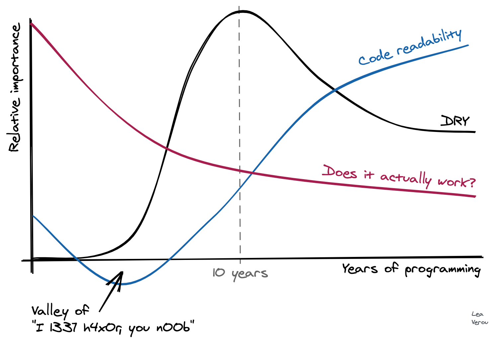

ここでは原人頭の開発者がソフトウェア開発に関する考えをまとめている。
原人頭の開発者はそれほど賢くない。長年プログラムを作り、いくつかのことを学んだが、ほとんどはまだ混乱している。
原人頭の開発者は、若い原人のためだけでなく自分自身のためにも、学ぶべきことを減らし、わかりやすく面白く書こうと思う。なぜなら原人は年を取るにつれ、朝に何を食べたか、ズボンを履いたかどうかなど、大事なことまで忘れてしまうからだ。
賢い頭を持つ開発者は多く、その中にはこういう考えを好まない人もいるので、彼らは渋い顔をするだろう。
自分が賢い頭を持つ開発者だと思っている、そして多分そうではない、たくさんの人がいる。それがインターネットだ。
(注：原人はかつて自分が賢い頭を持っていると信じていたが、苦い経験からそうでないと学んだ)
問題ない！
結局は人の勝手だし一日の終りにはそれほど重要なことじゃなくなる。しかし、原人はあなたが楽しみながら読んでくれて、原人が長いプログラマー人生で犯したたくさんの間違いから学べることを祈っている。
原人平原の頂点捕食者（エイペックス・オブ・プレデター）は複雑さである。
複雑さは悪い。
もう一度言う。
複雑さはとても悪い。
あなたは言う。
複雑さはとてもとても悪い。
複雑さ、あるいはTレックス、どちらかと相対せねばならなくなったときは、原人はTレックスを選ぶ。すくなくともTレックスは目で見ることができる。
複雑さは、人のよい非原人頭の開発者やプロジェクトマネージャーを通じて、彼らの善意によってでありながらも、コードベースに侵入してきてしまう悪霊である。彼らは複雑さの悪霊を恐れず、時にはそれについて知らないことすらある。
ある日には、コードベースは理解できて原人は仕事を終わらせられる。すべては順調！
次の日、仕事は不可能に陥る。複雑さの悪霊がコードに入り込み危機的な状況だ！
原人は複雑さの悪霊を見ることはできないが、コードベースにその存在を感じる。
複雑さの悪霊は原人をあざ笑う。こちらでは理解不能な変化を起こし、あちらでは無関係な機能が壊れる。一体どうなっているんだ！？悪霊の笑い声を聞きながら『原人はプログラミングが好きだ、原人の古老が勧めてくるように輝くピカピカ石を投資して生計を立てるようにはなりたくはない……』と考える。
頼りのこん棒は複雑さの悪霊を捉えられず、その悪霊を侵入させた開発者をぶん殴ろうという悪い考えにしかならない。ときにそのこん棒の対象は原人自身である！ 残念ながら、そう、しばしば原人自身なのだ！
だから、原人はまた言う、何度も言う。 複雑さはとてもとても悪い。
複雑さの悪霊に対する最強の武器は魔法の言葉『ノー』だ。
「ノー、原人はその機能を作らない」
「ノー、原人はその抽象化をしない」
「ノー、原人は毎日水浴びしたり、黒い液体を飲む量を減らしたりしない。その話はもうやめて」
注：これは良いエンジニアリングのためのアドバイスであって、キャリアのためのアドバイスではない。『イエス』はより多くの輝くピカピカ石を得るための魔法の言葉であり、あなたを大きな開発部族の首長にしてくれる。
悲しい真実だが『イエス』を学び、失敗したときに他の原人に責任転嫁する方法を学ぶのが理想的なキャリアのためのアドバイスだ。
しかし、原人は原人たちに真摯であるべきだ。『ノー』は原人における魔法である。最初のうちは言うのは難しい。特に優しい原人で他人をがっかりさせたくない場合(そんな原人はたくさんいる)。でも、時間がたつにつれて言うのは簡単になる。たとえ、得られるピカピカ石の量がそうすることで減ったとしても。
心配するな。原人は本当にそんなにたくさんのピカピカ石が必要なのだろうか？
時々は妥協が必要だ。ピカピカ石がないと、恐竜の肉も買えない。まずい、妻は家にいる若い原人が屋根や食べ物、その他もろもろが必要だということを原人に言って聞かせる。複雑さの悪霊についての愚痴には興味がない。それを聞くのは五十回目だ。 そういう状況では、『オーケー』と言うことを勧めたい。
「オーケー、原人はその機能を作る」
それから原人は時間をかけて『80/20ソリューション』を考える。 『80/20ソリューション』とは「機能は80%、コードは20%」というものだ。その解決策はプロジェクトマネージャーが望むすべてのベルやホイッスルを持っていないかもしれないし、少し醜いかもしれない。だが動くし、生産性が最も高く、複雑さの悪霊をほとんど部分で抑える。
ときには、プロジェクトマネージャーに何も言わずに『80/20ソリューション』を取ることが最善かもしれない。許可を得ることより許容される方が簡単だ。プロジェクトマネージャーは多くの問題に対処していて、心はチョウのように移ろいやすい。何の機能を実装すべきか、または進むべきか戻るべきか、原人をクビにした方がよいか、そういったことをしばしば忘れる。そのようなケースをたくさん見ている。
とにかく、プロジェクトマネージャーの利益にはかなっているので、あまり気にする必要はないだろう。
コードベースをいかに分けるべきか（しゃれた言い方では『どのようにコードを適切にファクタするか』）、その戦略を立てるのは難しい。ここでは汎用的なアドバイスはできない。なぜなら、各システムで非常に異なるからだ。しかし、原人が信じるただ一つのことがある。アプリケーションを早すぎる段階で分割しないこと！
プロジェクトの初期段階では、すべてが非常に抽象的で水の中にいるようだ。原人にはつかむためのワラもない。システムを開発するための『形』を作って自分が何をしているのかわかるには時間がかかる。原人はプロジェクトの最初のうちは分解を考慮にしないようにすると、ある時点で、良い分割点がコードベースから現る。
良い分割点は、システムの他の部分とインターフェイスが狭い。中に複雑さの悪霊をクリスタルで封じめてくれるようないくつかの関数や抽象化がある。
原人は、複雑さの悪霊をクリスタルに封印できたとき、とても爽快だ。宿敵を捕らえられて非常に満足している！
原人は分割点がコードから現れるのを辛抱強く待ち、時間経過とともにコードベースが形になっていく中、徐々にリファクタリングをする。そのための厳密なルールはない。原人はただ見る技術を磨き、分割点の出現を悟るための時間をかけるだけだ。忍耐だ。
時々、急ぎすぎ間違った抽象化をしてしまうので、辛抱強さが必要になる。
賢い頭を持つ開発者は待つことを好まないことが多く、プロジェクトの初期に多くの抽象化を考案してくる。
原人はこん棒を手に取り「賢い頭はコードを保守する気がない！次の設計会議でも開いてコードは原人に任せろ！」と叫びたくなる。
しかし、原人は衝動を抑える術を学んでいる。原人と動物の大きな違いだ。
その代わりに、UML図のようなものを与えたり（コードに傷を与えないし、どうせ捨てられる可能性が高い）、あしたの朝までに動かせるデモを依頼したりする。そうして、プロジェクトの初期段階における賢い頭の開発者からのダメージを抑えようとする。
動かせるデモは良いトリックだ。賢い頭に実際に動くものを作らせて、そのコードを見たり話し合ったりすることで、現実を早く理解させるのに役立つ。
心にとめておくべきだ！賢い頭は賢い頭を持っている。それは善のために使われるべきで、複雑さの悪霊が支配するサービスのために使われるべきではない。そういうことを何度も見てきた。
（最善の原人は、たくさんの賢い頭を正しい方向に導き、たくさんの複雑さの悪霊を封印したクリスタルを作り出せる。そんな原人には待っている！輝くピカピカ石の山！）
デモによる手法は「プロトタイプ」と呼ぶこともある。プロジェクトマネージャーには洗練された響きのように聞こえるだろう。
原人は開発の初期に『プロトタイプ』と叫ぶ、多くの賢い頭がある場合。
原人はテストと愛憎関係を持っている。テストは原人を何度も何度も救ってくれた。テストを愛しているし、尊重もしている。
残念ながら、多くのテストシャーマンが存在する。一部のテストシャーマンはテスト偶像を作り、原人がコードを書きドメインが何かわかる前に「原初のテスト」のようなものを求める。
原人はドメインが何かまだわかっていないのに、どうやってテストをするのだろう！？
「案ずるな。テストがお前に何をすべきか指し示してくれるだろう」
原人はまたこん棒に手を伸ばそうとする衝動にかられるが、なんとか冷静さを保つ。
原人はプロトタイプ段階の後にコードが固まってきたころ、大部分のテストを書く。
しかし、注意すべきだ。原人はここで規律を保たなければならない！
「原人のマシンでは動く」といってテストを書かないで進むことは簡単だ！
これは非常に良くない。他のマシンで動作する保証はなく、今後も原人のマシンで動作する保証もない。
テストシャーマンはテストの重要性については良い点を捉えているが、しばしば人生に必要な肝心の機能を完成させてくれず、常にテストにとらわれていることが多い。こん棒の餌食に値するが、心を正しい場所に保つべきだ。
また、テストシャーマンは単体テストについて話したがるが、原人はそれがあまり有用でないと思っている。原人の経験では、理想的なテストは単体テストでもE2Eテストでもなく、その中間のテストだ。
単体テスト 分かった、いいだろう。しかし実装が変更されれば壊れる（APIと比べても多く！）。そして、リファクタリングを困難にする。実際のところ、多くのバグはコードと他のコードとの相互作用によるものだ。コードが変更されれば、しばしば無駄になる。
原人はプロジェクトの開始段階で単体テストを書く。物事を進めるには役に立つが、執着すべきではなく、長期的な価値を期待すべきではない。
E2Eテスト テストが通ったときは、全体のシステムが機能していることを示している。しかし！通らなかったときはどうなっているのか理解するのは難しく、原人をいつもイライラさせる。時々、原人は「あー、こいつはいつも失敗する」と無視してしまう。とても悪い！
中間のテスト テストの合間、原人の耳にシャーマンの呼び声が響く。『統合テスト……』。 しばし、酸っぱい顔になってしまうが、しかし、原人は統合テストこそ甘露であると言いたい。システムの正確性をテストするには十分高水準であり、どこが壊れているか簡単に調べることができる良いデバッグ機能を持つぐらいには低水準である。
原人は最初の段階ではいくつかの単体テストを実施するスタイルを好むが、すべてのコードを100%テストするわけではなく、確実に「原初のテスト」ではない。「途中からテストする」ことは、原人の理解が進むにつれ、原人にとってかなりうまく機能する。
原人は統合テストに一所懸命に取り組みにつれ、分割点が現れシステムは安定する！分割点のAPIでは実装と統合テストが長い間にわたって維持されることが期待できる。そして、デバッグが簡単だ。
また、小さく、よく整理されたE2Eテスト群が作成され、こん棒の痛みの下でひたむきに機能し続けるように保守される。E2Eテストの焦点は、UIの汎用的なパーツといくつかの重要なエッジケースにあるが、あまり数が多くはなく、維持が不可能になり無視されてしまうほどではない。
これが原人にとって理想的なテストセットだ。
気に入らなくても、これが原人テストの目指すべきところである。
また、原人はモックがテストで使われるのを嫌う。絶対に必要な場合（まれに／決して）を除いて使うべきではないし、粗い粒度でその時のみのモッキング（切断点／システム）に留めるべきだ。
原人が嫌がる「原初のテスト」の例外は、バグが見つかったときだ。原人はまず回帰テストでバグを再現してから修正する。なぜかこの場合だけはうまくいく。
原人が思うにアジャイル開発は悪くない。良くもない。
結局のところ、開発を整理する最悪の方法ではなく、他の方法よりは良いかもしれないと原人は考えている。
しかし、危険なのはアジャイルシャーマンだ！たくさんのピカピカ石がアジャイルシャーマンによって失われた！
アジャイル開発のプロジェクトが失敗するたびに、アジャイルシャーマンは「お前らはアジャイルを正しくやっていない！」と言う。もっとピカピカ石を求めて、若い原人たちにアジャイルを教え込み続けられることができるので、これがアジャイルシャーマンにとって非常に都合が良いことに原人は気付く。危険だ！
原人はあまりにもアジャイルの会議が多くなるとこん棒を取り出したくなるが、なんとか気を落ち着かせる。
プロトタイピング、ツール、そして良い原人を雇うことが、成功するソフトウェア開発の鍵だ。アジャイルプロセスは助けになるが、ときに真剣に受け止めすぎると害を及ぼすこともある。
原人は言う、 「銀のこん棒はない」
アジャイルシャーマンが何と言おうと、すべての開発上における問題を解決することはできない。（危険だ！）
リファクタリングは特にプロジェクト後半でコードが固まってきたときには、良い取り組みでありしばしば良いアイディアを生む。
しかし、原人はキャリアの中で「リファクタリング」がひどく脱線し、良い結果よりも悪い結果を引き起こすことが多いことに気付いた。
原人には、なぜいくつかのリファクタリングが成功し、いくつかが失敗するのか正確にはわからないが、リファクタリングの規模が大きくなるほど失敗する可能性が高くなる。
原人はリファクタリングを小規模に留め、その最中に「沖に流されない」ようにしようとしている。理想的には、システムが常に機能し、他の作業が始まる前に各ステップを完了させるべきだ。
E2Eテストがここでの命綱だが、動作しない理由を探るのは非常に難しいことがよくある……それがリファクタリングというものだ。
また、原人は過渡の抽象化を導入すると、リファクタリングやシステムが失敗につながることが多いと考える。例をあげると、J2EEは導入することで、多くの賢い頭が過渡の抽象化について考えすぎて何も成果を挙げられず、たくさんのプロジェクトに打撃を与えた。
もう一つ、例を挙げる。原人はコードベース内の複雑さの悪霊を管理／捕らえるために、会社でOSGiを導入した。OSGiは役立つどころか、複雑さの悪霊をより強力にしてしまった！改修には最高の開発者たちで数年かかった！より強い複雑さの悪霊が現れ、今では実装は不可能な機能が増えた！非常に悪い！
英知ある原人のシャーマン、G・K・チェスタトンはかつてこう言った
ある制度や法律があります。簡単にするために例えましょう、道路に設置されたフェンスやゲートがあります。現代的な改革者が陽気な顔でやってきて、こう言います。「これは何の役に立っているのかわからないので、無くしましょう」それに対して、より知的なタイプの改革者ならこう言うでしょう。「それが何の役に立つのかあなたがわからないのなら、私はそれを無くすことに同意しません。一旦、戻って考えてきてください。それが何の役に立つかわかって帰ってきたら、無くすことに同意できるかもしれません」
多くの年配の原人は、この教訓をよく学び、どんなに醜く見えてもコードをむやみに引き裂かないようにする。
原人はすべてのプラトン主義のプログラマーが球体の奏でる音楽の完璧さをコードに求めていることを知っている。しかし、そこには危険が潜む。世界は醜く、グロテスクであることが多い。コードもそうであるべきだろう。
賢い頭を持つ人や、自身が賢い頭であると簡単に考える人、あるいは原人でさえ謙虚さをしばしば忘れ、「おお、原人はこの見た目が好きではない。修正する」と考えてしまうことは多い。時間の浪費を引き起こし、システムは良くならず、返って悪化することすらある。
原人はキャリアの初期に、こん棒を振り回しながらコードベースに突入し、すべてを台無しにしてしまった経験を積み、それが良くないことを学んだ。
原人はシステムを改善することを否定しない。愚かに見えるが、特にシステムが大きい場合は、システムを理解するための時間を取ることを勧める。そして、たとえ完璧でなくても、今機能しているコードを尊重すべきだ。
そこではテストが「なぜフェンスを壊してはいけないか」の良いヒントになるだろう！
なぜ賢い頭が、システムの分割やネットワーク呼び出しといった最も難しい問題を導入するのか、原人は不思議に思う。
原人には非常に混乱しているように見える。
原人はツールが大好きだ。ツールとコントロールへの情熱が原人と恐竜を分ける！ツールは他では不可能なコードを作成することを可能にする。常に助けになる！原人は新しい場所に行くと、生産性を最大化するため、常に周りからツールを学ぶ。二週間ツールを学ぶことで開発は二倍早くなる。他の開発者の助けを得ることで使い方を掘り下げることができる。たとえドキュメントがなくても。
原人がすべてのAPIを覚えておかずに済むようにしてくれるので、IDEのコード補完はとても重要だ！ それなしでJavaプログラミングは原人にはほぼ不可能だ！ 真の意味で考えるための時間をくれる。
良いデバッグ機能はピカピカ石と同じ重さの価値がある、いや実際はそれ以上だ。バグに直面したとき、原人はすべてのピカピカ石とときには子供数人さえ差し出してでも良いデバッグ機能を手に入れようとするだろう。まあ原人の知る限りでは、そもそもデバッグ機能に重さなんてない。
原人は新しいプログラマーに利用可能なデバッグ機能を深く学ぶことをいつも勧める。条件付きブレークポイント、式評価、スタックナビゲーションなどの機能は、新しい原人に大学の授業よりもコンピュータについて多くを教えてくれるだろう！
原人は言う、ツールの改善を常に怠るな、と。
原人は型がとても好きだ。プログラミングを簡単にしてくれる。原人にとって型の価値は、キーボードでドットを打ったときに、原人ができることのリストが魔法のようにポップアップすることだ。これが型の九割以上の価値だ。
賢い頭の型シャーマンは、型の正確性こそが要点だと言うことが多いが、原人は賢い頭の型シャーマンがコードをあまり配信していないことに気付いている。配信されないコードはある意味で正確と言えるかもしれないが、原人が「正確」というときに指すものとは別のものだ。
原人はツールの魔法でできるコードの完成度こそが型の利点であると言いたい。正確性も良いものではあるが、それほど重要ではない。
賢い頭たちには注意が必要だ！
ひとかたの賢い頭は型について考え、律(レンマ)で話す。脅威が迫る！
危険な抽象化が高まりすぎる。ビッグブレイン型システムのコードはプラトニックな汎用チューリング計算モデルのアーストラル投影と化し、コードベースに侵入する。ある程度の優雅さは認めるが、めまいを禁じ得ない。原人社にとっての当面の課題はこん棒在庫管理のような実用的な作業であって、それには全く適さないのだ。
ここでのジェネリクスは特に危険だ。原人は値を出力するほとんどのコンテナクラスではジェネリクスを制限すべきだと考える。 ジェネリクスの誘惑は強く、目を曇らせる！悪魔はジェネリクスが大好きだ！注意しろ！
型は常に利益を生む。ドットを打って何が出来るのか見るということを決して忘れないでほしい！
原人もかつては可能な限りコードの行数を最小化したいと思っていた。例えば、こんなふうなコードを書いていた：
if(contact && !contact.isActive() && (contact.inGroup(FAMILY) || contact.inGroup(FRIENDS))) {
// ...
}
時間がたつにつれてこれはデバッグが難しいことを学び、このように書くようになった：
if(contact) {
var contactIsInactive = !contact.isActive();
var contactIsFamilyOrFriends = contact.inGroup(FAMILY) || contact.inGroup(FRIENDS);
if(contactIsInactive && contactIsFamilyOrFriends) {
// ...
}
}
多くのコード行と無意味な変数に戦慄する若い原人の雄たけびを聞き、原人はこん棒で身を守る構えをする。
こん棒の戦いが始まり原人は叫ぶ、「デバッグはこっちのほうが簡単だ！式の結果が明確で、わかりやすい命名！条件式を理解しやすくなる！デバッグ、カンタン！」
こん棒の戦いが終わると、若い原人も少し考えて、こっちのほうが正しいことに気付く。
原人もまだ最初のように書いてしまうことがあり、しばしば後悔するので、若い原人を批判はしない。
DRYとは「Don't Repeat Yourself(自身を繰り返すな)」という意味で、ほとんど開発者が肝に銘じている格言だ。
原人はDRYに敬意を払うが、賢者アリストテレスが中庸を重んじたように、何事もバランスを取ることを勧める。
原人は以下のリー・ヴァローによる図が「繰り返さない」というプログラマーの情熱に対応していることに注意を促したい。

訳注：
Code readability 可読性
Does it actually work 実際に機能するのか？
プログラミング経験が十年を超えたあたりで、原人はコードの繰り返しをそれほど気にしなくなった。
繰り返しコードが十分にシンプルで明白である限り、コピペしてちょっと書き換える方が、多くのコールバック／クロージャを渡される引数や複雑なオブジェクトモデルよりも良いと考え始めた。あまりに少ないメリットに対し、ときに複雑すぎる。
ここでのバランスは難しい。つい繰り返しコードをじっと見つめて、ちょっと考えてしまうが、繰り返しコードはしばしば複雑なDRYの解決策よりも良いと経験から示されている。
原人は開発者があまり決まり文句を真剣に受け止め過ぎないことを勧める。ジョークのようなものだ。心に留めてほしい！
Separation of Concern (SoC) another powerful idea over many developer
関心の分離（SoC）とは、多くの開発者の心を捉えている強力な概念であり、システムの異なる側面を個別のコードセクションに分割するというアイディアだ。
ウェブ開発の標準的な例：スタイル（css）、マークアップ（html）、およびロジック（javascript）の分離
DRYのときよりも苦い顔になってしまう。原人はSoCに対する現実的な代替設計原則である振る舞いの局所性（LoB）について賢い頭のようなエッセイを書いている。
原人は機能する場所にコードをそのまま置くことを好む。それを見れば、何をしているか一目でわかる。わかりやすい。
関心の分離があると、ボタンがどう機能するかすべてのファイルを見て理解しなければならない。非常に混乱し、時間が無駄になる。よくない！
クロージャにとって適切な仕事とは通常、オブジェクトのコレクションに対する操作を抽象化することである。
クロージャや型、ジェネリクスは塩のように少量ならば効果的だが、使いすぎると台無しになり心臓発作を起こす。
JavaScript開発者は非常に特殊な複雑さの悪霊を「コールバック地獄」と呼ぶ。JavaScriptライブラリでクロージャが使われすぎた結果の悲劇だが、率直に言わせてもらうと、それもJavaScript開発者が受けるべき報いだ。
原人はロギング愛好家であり、特にクラウド環境ではたくさん使うように推奨している。ロギングは高くつき重要ではないと非原人は言う。原人もかつてはそのように考えていたが、今はそう考えていない。
面白い話がある。原人はその昔、アイドル的存在のロブ・パイクがGoogleでロギングに取り組んでいると知った。「ロブ・パイクがロギングをやっているなら、原人でそこに何をする必要があるんだ？！？」と追求するのをやめることにした。Googleにとってロギングは非常に重要な問題なので、当然最高のプログラマーが取り組んだわけだ！
原人頭になるべきではない、得られるピカピカ石の量をかなり減らしてしまった！
まあ、原人は結局良い会社に就職したし、ロブ・パイクの服装はますます変になっているから結果オーライだが、要点は変わらない。ロギングは非常に重要だ！
原人のロギングに関するTips：
最後の2つのポイントは、特に本番システムでバグと戦うときに非常に便利な道具になる。
残念ながらロギングライブラリは非常に複雑になりがちだ。（Javaは、なんであんなことに？）しかしロギングのインフラを完璧に整えるための時間投資は、後々大きな見返りをもたらす（原人の経験談）。
ロギングは学校でもっと教えられるべきだ。原人はそう考えている。
すべてのまともな開発者のように、原人も同時実行性を恐れている。
可能な限り、ステートレスなWebリクエストハンドラや、ジョブ間に相互依存性がないシンプルなリモートジョブワーカーキュー、そして単純なAPIといった単純な並行処理モデルに頼るように努めている。
ウェブの作業では、楽観的同時実行制御はうまく機能するようだ。
時折、通常はフレームワークコードを記述する際に、原人はスレッド局所記憶を使用することがある。
一部の言語は優れた並行データ構造を備えている（例えばJavaのConcurrentHashMapなど）が、それでも正しく動作させるには注意深い作業が必要である。
良い評判は聞いているが、原人はErlangを使ったことがない。申し訳ないが言語としては奇妙に見える。
究極的な賢い頭の開発者はかつて言った。
時を得ない最適化は諸悪の根源なのであります。
これはほぼすべての者が知っており、原人もその末席から激しく同意をする。原人は常に、最適化前に具体的な実機のパフォーマンスで特定の課題を設定することを推奨する。実際の問題が何かは予測不能であり、原人もよく驚く！非常に頻繁に！
CPU偏重に注意してほしい。学校でCPU計測やビッグO記法ばかり学んだため見えやすいが、遅延の真因でないことが多く、原人を含め多くの者を驚かせる。
ネットワーク遅延は数百万CPUサイクルに相当する。可能な限り最小化すべきだ。賢い頭のマイクロサービス開発者よ、肝に銘じてほしい！
未経験の賢い頭の開発者はネストしたループを見て「O(n^2)？私の前では許されない！」と叫ぶ。
複雑さの悪霊はそれを見てほくそ笑む。
原人は良いAPIを好む。良いAPIは原人に余計な頭を使わせない。
残念ながら多くのAPIはひどく、原人をかなり考え込ませる。これには多くの理由があるが、主な理由は二つである。
原人はAPIの詳細に興味はない。ファイル書き込みやソートがしたいだけで、ただwrite()やsort()を呼びたいだけだ。
だが賢い頭のAPI開発者は言う。
「慌てるな、原人！そのファイルは書き込みモードで開いたか？ソート用のComparatorは定義したか？」
原人はこん棒を取り出すのをじっと我慢する。
今はそんなことどうでもいい、ただソートとファイル書き込みがしたいだけだ！
賢い頭のAPI設計者にも一理あるかもしれないが、大抵は不要だ。複雑なケースのAPIとシンプルなケースのAPIは分けるべきだ。
異なる複雑さのレベルで2〜3種類のAPIを用意する、原人はこれを「階層化」と呼ぶ。
オブジェクト指向なら、APIは他の場所でなくオブジェクトに直接置くべきだ。Javaではこれが凶悪だ！
Javaでリストをフィルターにかけたい。
「Streamに変換しましたか？」
しょうがない、Stream化しよう。
「ではフィルターできます」
OK、しかしリストが欲しいのにStreamになってしまった！
「では、Streamを配列にcollectしますか？」
は？
「Streamを配列にcollectするためにCollectorの<? super T, A, R>を定義してください」
こいつらを撲殺してやることを祖霊の前で誓うが、一旦深呼吸しよう。
filter()のような基本機能は配列に直接実装して配列を返すべきだ、Javaの賢い頭を持つ開発者！
誰もStreamなど知らない。ネットワークAPIではない、すべてのJava原人は配列を使っている！
原人は即席でプログラミング言語を作るのが大好きで、再帰下降パーサーはパーサーを作る最も楽しく美しい方法だと主張したい。
残念ながら多くの大学ではパーサージェネレーターだけ教える。原人が普段愛用する道具とは違う。パーサージェネレーターは理解不能な蛇の巣のようなコードを生成する。文法の再帰性を隠しデバッグは不可能、最悪だ！
考えるに、悲しい真実ではあるが、複雑さの悪霊はコードベースには有害だが、学術論文の量産には有益だ。
学校では無視されるが、現場のパーサーはほぼ常に再帰下降だ！パースがどれほどシンプルにできるか気付いて原人は激怒した！パースは賢い頭だけの魔法ではない、君にもできる！
ロバート・ナイストロームという賢い頭の開発者が『インタプリタの作り方』という再帰下降の素晴らしい解説書を書いて賢い頭氏族の名誉を取り戻したのを見て原人は喜んでいる。
本はオンライン上に無料で公開されているが、興味がある原人には購入することを強くお勧めする。優れた知見を提供してくれて、原人の愛読書となるだろう。ただしVisitorパターンだけは別だ！
一部の非原人は、ウェブ開発に直面してこう言う。
「わかっているよ。フロントエンドとバックエンドを分離する。それから、イケてる新しいSPAライブラリを使って、HTTPを通してAPIからGraphQLで通信してJSONを受け取るんだ」(ここでおもしろいのはハイパーテキストに変換していないことだ)
そうして二匹の複雑さの悪霊が潜む巣窟が生まれる。
さらに悪いことに、フロントエンドの複雑さの悪霊は強大であり、その精神汚染は原人が知る限りのフロントエンド業界すべてに広がっている。
バックエンド開発者は物事をシンプルに保とうとし、うまく機能することもあるが、フロントエンド開発者はすぐ複雑なものを作り、複雑さの悪霊のコードを量産する。
フォームでデータベースに送信するだけのサイトや簡単なパンフレットサイトでもだ！
今まさにこのときも、みんながこれをやってやる！
原人はなぜそうなっているのかわからない。おそらく、FacebookやGoogleがそう言っているからだろうが、それはそうする理由としてふさわしいものだとは原人は思わない。
原人はそれを避けるためにhtmxとhyperscriptを作っている。
複雑さを抑え、HTMLをシンプルにしてくれて、JavaScriptが増殖するのを避ける、複雑さの悪霊への聖水。
機能はするが、仕事のポストはないかもしれない、申し訳ない。
就職といくつかのタイプのアプリケーションにはReactの方が適しているかもしれないが、好む好まざるにかかわらずあなたを複雑さの悪霊の邪教徒にする。それがフロントエンド人生である。
原人は開発における多くの流行、特に現代のフロントエンド開発におけるものに注目している。
バックエンドはまだマシで退屈である。現時点で悪いアイディアはもうやり尽くされているからだ。(それでもまだそのいくつかはまた試してみようとされる！)
フロントエンドではいまだにすべての悪いアイディアが試され、変化は激しく理解するのは難しい。
原人は新しい革命的アプローチには眉に唾をつけて見ることを勧める。賢い頭たちは長年研究していて、ほとんどのアイディアはコンピュータ上で既に試されている。
原人は新しいトリックを学習することは否定しないし、新しく優れたアイディアが存在しないとも言わない。しかし、リサイクルされた悪いアイディアで時間を浪費し、それをコードベースに無造作に投げ入れることから複雑さの悪霊が持つ魔力の多くは生まれる。
シニア原人が大っぴらに「うーん、これは複雑すぎる」と言ってくれれば非常に良い！
多くの開発者はバカに見られることへの恐怖症（Fear Of Looking Dumb - FOLD）を抱えている。原人もかつてFOLDだったが、克服した。シニア原人が「これは複雑すぎて混乱する」と認めることは極めて重要だ。
これによりジュニア原人も複雑さを認め理解できないと言い出しやすくなる。実際にそのようなケースはよくある。FOLDは開発者、特に若い原人を支配する複雑さの悪霊が持つ力の源だ！
FOLDの力を奪い取れる、シニア原人のそのような行為は素晴らしい！
注：必ずしかつめらしい顔を作り、賢い頭に見えるように言うこと。賢い頭か、より悪いことに(そちらの方が多いが)自分を賢い頭だと思い込んでいる人から陰口をたたかれる。
強くあれ！FOLDであるな！
こん棒は時には役立つが、ユーモアのセンスや賢い頭がこの前に失敗したプロジェクトの話はもっと役に立つ、集めて取っておくべきだ。
開発現場では多くの人が自分はインポスターであると感じている。
全知全能の支配者となりソーのようにコードのムジョルニアを振り回すか、あるいは自分が何をしているか全くわかっていないか、人は常にそのいずれかである。
原人は大抵後者の状態だが、それをうまく隠している。多くの業務用のソフトウェアを作りOSSでそこそこの成功を収めた。いまだに「何もわかっていない」と感じることはよくある！とても頻繁に！コードを壊し同僚の原人を失望させないかとおびえている！このインポスターめ！
ほとんどの原人にとってプログラミングの本質とは多分、インポスターであるという感覚を抱き、それでいいんだと思うことだ。皆がインポスターであるなら誰もインポスターではないのだ。
ここまで読んでくれた若い原人よ、悪いが常に不安や心配は付きまとう。それでもプログラマーとしてやっていける。
原人は以下の読み物を推奨する。
あなた は言う。複雑さはとてもとても悪い。